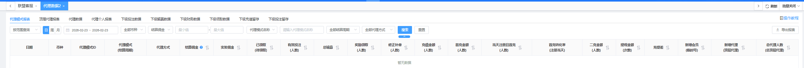
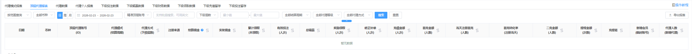
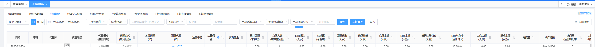
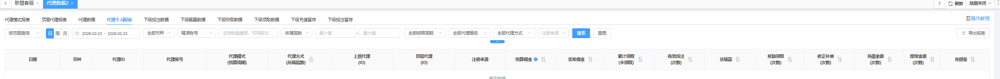
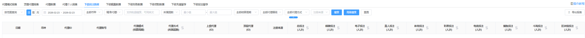
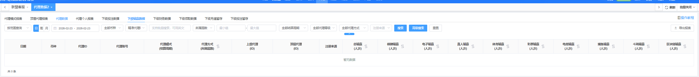
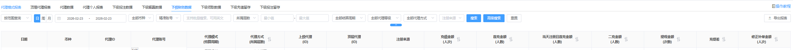
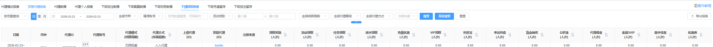
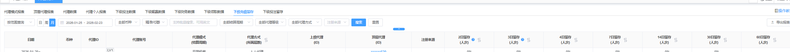
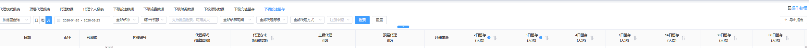

代理数据2（原代理数据查询-新）
1 、代理模式报表
该模块为每个代理模式每天产生的数据，包含顶层代理投注的记录。数据统计方式：按范围查询、每天一条；默认为按范围查询。
如下图所示：

1.2 部分字段说明
代理模式ID：跳转到代理模式中，并且搜索对应的代理模式。
代理模式：该数据目前的代理模式
结算佣金：即当天结算的佣金，如果当天没有结算，则佣金为0；跳转到顶层代理报表中并查询对应的数据。
结算周期：该代理模式结算的周期(日结、周结、月结等)
有效投注：当天的总有效投注金额
投注人数：当天的投注人数（账号去重，点击跳转）
奖励领取：当天的领取奖励的金额
领取人数：当天的领取奖励的人数（账号去重，点击跳转）
首充金额：账号首次充值的金额
首充人数：账号首次充值的人数
总代理人数：即当前代理模式中总的代理，为每天的总数
总顶层代理：即当前代理模式中总顶层代理，为每天的总数
新增顶层代理：跳转所有代理查询
当天注册且首充金额：当天注册的账号在当天首次充值的金额
当天注册且首充人数：当天注册的账号在当天首次充值的人数
二充金额：用户在首次充值后，再次进行第2次充值的金额
二充人数：用户在首次充值后，再次进行第2次充值的人数
充值金额：当天的充值金额
充值人数：当天的充值人数（账号去重，点击跳转）
提现金额：当天的提现金额
提现人数：当天的提现人数（账号去重，点击跳转）
修正补单：当天修正补单的金额（包含手动加款、手动扣除）
修正人数：当天修正补单的人数（账号去重）
新增代理：当天新增的代理数
新增会员：当天新增的会员数
总顶层代理数：当天该代理模式下的总顶层代理人数
总代理人数：当天该代理模式下的总代理人数
2 、代理顶层报表
该模块查询每条代理线产生的相关数据，包含顶层代理的数据。数据统计方式：按范围查询、每天一条；默认为按范围查询。
如下图所示：

2.1 部分字段说明
代理模式：该代理数据目前的代理模式
结算周期：该代理模式结算的周期(日结、周结、月结等)
下级层数：即该条代理线一共有多少层。
结算佣金：跳转到代理数据报表
有效投注：查询时间段内的有效投注金额
投注人次：查询时间段内的投注人次（账号去重，点击跳转）
奖励领取：查询时间段内的领取奖励的金额
领取人次：查询时间段内的领取奖励的人数（点击跳转代理数报表）
首充金额：账号首次充值的金额
首充人数：账号首次充值的人数（点击跳转代理数报表）
当天注册且首充金额：当天注册的账号在当天首次充值的金额
当天注册且首充人数：当天注册的账号在当天首次充值的人数
二充金额：用户在首次充值后，再次进行第2次充值的金额
二充人数：用户在首次充值后，再次进行第2次充值的人数
充值金额：查询时间段内的充值金额
充值人数：查询时间段内的充值人数（点击跳转代理数报表）
提现金额：查询时间段内的提现金额
提现次数：查询时间段内的提现人数（点击跳转代理数报表）
修正补单：查询时间段内的修正补单的金额（包含手动加款、手动扣除）
修正人数：查询时间段内的修正补单的人数（账号去重）
新增代理：查询时间段内的新增的代理数
新增会员：查询时间段内的新增的会员数
代理人数：该顶层代理线中的代理人数
3、 代理数据报表
该模块主要是查询代理账号获得佣金、推广、转化率等相关数据，点击ID即可查询下级的信息。数据统计方式：按范围查询、每天一条；默认为按范围查询。
特别说明：代理模块的时间查询为时间必填，不在支持删除时间查询
注册转化率：注册人数/访问次数 （该数值可超过100%）
首充转化率：首充人数/注册人数
3.1 代理数据
搜索部分可以选择对应的币种，显示当前币种的总计，默认全部币种
如下图所示：

3.2 部分字段说明
币种：该代理使用的币种
代理ID：查询的代理ID
代理账号：可点击，点击查询该代理账号的会员信息
上级代理：该账号的上级代理
顶层代理：该账号的顶层代理
所处层数：该账号目前的所处层数
代理模式：该账号目前的代理模式
注册来源：该账号的注册来源
结算佣金：跳转到佣金审核-全部记录
领取奖励：跳转到下级领取数据
有效直属数：该账号的有效的直属数
有效投注（人次）：跳转到下级投注
直属人数：该账号的总的直属数包括无效
总业绩：该账号的业绩
累计领取：该账号已领取的佣金（同所有代理累计领取）
未领取：该账号待领取的金额（同所有代理未领取）
代理链接：该账号的代理链接
访问量：该账号的代理链接的访问量
代理数据查询所有的页面增加顶级代理ID和代理层数展示，增加下级投注留存和下级充值留存页面
下级充值留存，下级投注留存：数据不显示当天的数据，默认为当月的数据，支持三个月的数据查询，对应的数据有如果没有则为-
2日留存：2人次以上的充值的 ÷ 该时间段之内的充值人次 x 100%
3日留存：2人次以上的充值的 ÷ 该时间段之内的充值人次 x 100%
首充人数：时间范围内该代理下玩家的首次充值人数
注册转化率：注册人数/访问次数 （该数值可超过100%）
首充转化率：首充人数/注册人数
投注和留存的规则一样
4 、代理个人报表
该模块为代理的投注、充值、提现的相关数据。数据统计方式：按范围查询、每天一条；默认为按范围查询。
如下图所示：

1.2 部分字段说明
代理模式：该数据目前的代理模式
结算周期：该代理模式结算的周期(日结、周结、月结等)
投注次数：当天的投注次数
输赢金额：该代理当天的游戏输赢金额
奖励领取：该代理当天的领取奖励的金额
领取次数：该代理当天的领取奖励的次数
充值金额：该代理当天的充值金额
充值次数：该代理当天的充值次数
提现金额：该代理当天的提现金额
提现次数：该代理当天的提现次数
修正补单：该代理当天修正补单的金额（包含手动加款、手动扣除）
修正次数：该代理当天修正补单的次数
5、下级投注数据
该模块为查询代理账号的直属下级的投注数据。 点击当前的代理ID，可依次查看对应的下级代理数据。数据统计方式：按范围查询、每天一条；默认为按范围查询。
5.1 搜索部分
搜索部分可以选择对应的币种，显示当前币种的总计，默认全部币种，搜索时间范围内该代理的下级投注数据 （投注人次按照单日和账号去重）
如下图所示：

5.2 部分字段说明
币种：该代理下级使用币种
代理ID：查询的代理ID
代理账号：可点击，点击查询该代理账号的会员信息
上级代理：该账号的上级代理
顶层代理：该账号的顶层代理
所处层数：该账号目前的所处层数
代理模式：该账号目前的代理模式
注册来源：该账号的注册来源
成为代理时间：该账号成为代理的时间
总投注：该账号下级总投注金额
投注人次：该账号的下级投注人次（账号去重）
棋牌投注：该账号下级的棋牌投注
棋牌人次：该账号的下级棋牌投注人次（账号去重）
电子投注：该账号下级的电子投注
电子人次：该账号的下级的电子投注人次（账号去重）
真人投注：该账号下级的真人投注
真人人次：该账号的下级真人投注人次（账号去重）
体育投注：该账号下级的体育投注
体育人次：该账号的下级的体育投注人次（账号去重）
彩票投注：该账号下级的彩票投注
彩票人次：该账号的下级彩票投注人次（账号去重）
电竞投注：该账号下级的电竞投注
电竞人次：该账号的下级的电竞投注人次（账号去重）
捕鱼投注：该账号下级的捕鱼投注
捕鱼人次：该账号的下级捕鱼投注人次（账号去重）
斗鸡投注：该账号下级的斗鸡投注
斗鸡人次：该账号的下级的斗鸡投注人次（账号去重）
区块链投注：该账号下级的区块链投注
区块链人次：该账号的下级区块链投注人次（账号去重）
6、 下级输赢数据
该模块为查询代理账号的直属下级的盈亏数据。 点击当前的代理ID，可依次查看对应的下级代理数据。数据统计方式：按范围查询、每天一条；默认为按范围查询。
6.1 搜索部分
搜索部分可以选择对应的币种，显示当前币种的总计，默认全部币种，搜索时间范围内该代理的下级盈亏数据（盈亏人次按照单日和账号去重）
如下图所示：

6.2 部分字段说明
币种：该代理下级使用币种
代理ID：查询的代理ID
代理账号：可点击，点击查询该代理账号的会员信息
上级代理：该账号的上级代理
顶层代理：该账号的顶层代理
所处层数：该账号目前的所处层数
代理模式：该账号目前的代理模式
注册来源：该账号的注册来源
成为代理时间：该账号成为代理的时间
总盈亏：该账号下级的总盈亏
盈亏人次：该账号的下级投注人次（账号去重）
棋牌盈亏：该账号下级的棋牌盈亏
棋牌人次：该账号的下级棋牌盈亏人次（账号去重）
电子盈亏：该账号下级的电子盈亏
电子人次：该账号的下级的电子盈亏人次（账号去重）
真人盈亏：该账号下级的真人盈亏
真人人次：该账号的下级真人盈亏人次（账号去重）
体育盈亏：该账号下级的体育盈亏
体育人次：该账号的下级的体育盈亏人次（账号去重）
彩票盈亏：该账号下级的彩票盈亏
彩票人次：该账号的下级彩票盈亏人次（账号去重）
电竞盈亏：该账号下级的电竞盈亏
电竞人次：该账号的下级的电竞盈亏人次（账号去重）
捕鱼盈亏：该账号下级的捕鱼盈亏
捕鱼人次：该账号的下级捕鱼盈亏人次（账号去重）
斗鸡盈亏：该账号下级的斗鸡盈亏
斗鸡人次：该账号的下级的斗鸡盈亏人次（账号去重）
区块链盈亏：该账号下级的区块链盈亏
区块链人次：该账号的下级区块链盈亏人次（账号去重）
7、 下级财务数据
该模块为查询代理账号的直属下级的财务数据。 点击当前的代理ID，可依次查看对应的下级代理数据。数据统计方式：按范围查询、每天一条；默认为按范围查询。
7.1 搜索部分
搜索部分可以选择对应的币种，显示当前币种的总计，默认全部币种，搜索时间范围内该代理的下级财务数据（人次按照单日和账号去重）
如下图所示：

7.2 部分字段说明
币种：该代理下级使用币种
代理ID：查询的代理ID
代理账号：可点击，点击查询该代理账号的会员信息
上级代理：该账号的上级代理
顶层代理：该账号的顶层代理
所处层数：该账号目前的所处层数
代理模式：该账号目前的代理模式
注册来源：该账号的注册来源
成为代理时间：该账号成为代理的时间
首充金额：该账号下级的首充金额
首充人次：该账号的下级首充人次
充值金额：该账号的下级充值金额
充值人次：该账号的下级充值人次 （账号去重）
提现金额：该账号的下级提现金额
提现人次：该账号的下级提现人次 （账号去重）
充提差额：充值金额 - 提现金额=充提差额
补单金额：该账号的下级修正补单的金额
补单人次：该账号的下级补单人次 （账号去重）
8、 下级领取数据
该模块为查询代理账号的直属下级的领取数据。 点击当前的代理ID，可依次查看对应的下级代理数据。数据统计方式：按范围查询、每天一条；默认为按范围查询。
8.1 搜索部分
搜索部分可以选择对应的币种，显示当前币种的总计，默认全部币种，搜索时间范围内该代理的下级优惠数据 （人次按照单日和账号去重）
如下图所示：

8.2 部分字段说明
币种：该代理下级使用币种
代理ID：查询的代理ID
代理账号：可点击，点击查询该代理账号的会员信息
上级代理：该账号的上级代理
顶层代理：该账号的顶层代理
所处层数：该账号目前的所处层数
代理模式：该账号目前的代理模式
注册来源：该账号的注册来源
成为代理时间：该账号成为代理的时间
---------------以下为活动类型方面的字段，该部分每次只要活动类型增加之后，都会进行增加-----------
活动领取：该账号下级的活动领取金额
活动人次：该账号的下级领取活动人次 （账号去重）
任务领取：该账号的下级任务领取金额
领任务人次：该账号的下级领取任务人次 （账号去重）
返水领取：该账号的下级任务返水金额
领返水人次：该账号的下级领取返水人次 （账号去重）
VIP领取：该账号的下级VIP领取金额
领VIP人次：该账号的下级领取VIP人次 （账号去重）
代理佣金：该账号的下级任务领取代理佣金金额
领佣金人次：该账号的下级领取佣金人次 （账号去重）
利息宝：该账号的下级利息宝领取金额
领利息人次：该账号的下级领取利息宝人次 （账号去重）
…………
9、下级充值留存
该模块为查询代理账号的直属下级的充值留存数据。 点击当前的代理ID，可依次查看对应的下级代理数据。
9.1 搜索部分
搜索部分可以选择对应的币种，显示当前币种的总计，默认全部币种，搜索时间范围内该代理的下级充值留存数据 （人次按照单日和账号去重）
如下图所示：

9.2 部分字段说明
币种：该代理下级使用币种
代理ID：查询的代理ID
代理账号：可点击，点击查询该代理账号的会员信息
上级代理：该账号的上级代理
顶层代理：该账号的顶层代理
所处层数：该账号目前的所处层数
代理模式：该账号目前的代理模式
成为代理时间：该账号成为代理的时间
X日留存：查询日期范围内有过X天充值的人数/该时间段内总的投注人数*100%
X日人次：查询日期范围内有过X天充值的人次
10、 下级投注留存
该模块为查询代理账号的直属下级的投注留存数据。 点击当前的代理ID，可依次查看对应的下级代理数据
10.1 搜索部分
搜索部分可以选择对应的币种，显示当前币种的总计，默认全部币种，搜索时间范围内该代理的下级投注留存数据 （人次按照单日和账号去重）
如下图所示：

10.2 部分字段说明
币种：该代理下级使用币种
代理ID：查询的代理ID
代理账号：可点击，点击查询该代理账号的会员信息
上级代理：该账号的上级代理
顶层代理：该账号的顶层代理
所处层数：该账号目前的所处层数
代理模式：该账号目前的代理模式
成为代理时间：该账号成为代理的时间
X日留存：查询日期范围内有过2天投注的人数/该时间段内总的投注人数*100%
X日人次：查询日期范围内有过2天投注的人次